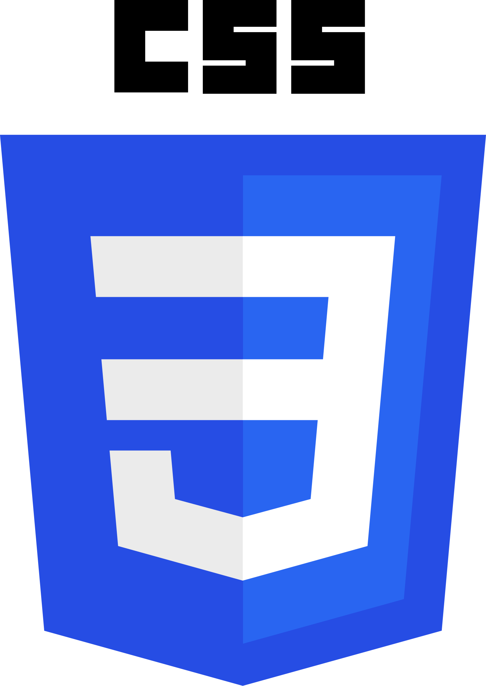

Skills

HTML

CSS

JavaScript

VS Code
Mahasiswa Ilmu Komputer Angkatan 2024
Saya memiliki ketertarikan yang besar di bidang teknologi, khususnya pada pengembangan web dan pemrograman. Sejak awal kuliah, saya aktif mempelajari dasar-dasar HTML, CSS, dan JavaScript untuk membangun berbagai proyek sederhana. Selain itu, saya juga terbiasa menggunakan Visual Studio Code sebagai editor utama dalam proses belajar dan pengembangan aplikasi.
Bagi saya, teknologi bukan hanya sekadar alat, melainkan sarana untuk menciptakan solusi yang bermanfaat bagi banyak orang. Saya senang mengeksplorasi hal-hal baru, mengikuti tren perkembangan teknologi, dan mencoba mengimplementasikannya ke dalam proyek nyata. Dengan terus berlatih dan belajar, saya berharap dapat menjadi seorang developer yang tidak hanya menguasai teknis, tetapi juga mampu berkontribusi dalam membangun sistem yang inovatif, efektif, dan mudah digunakan.
Lihat Skills
HTML
CSS
JavaScript
VS Code